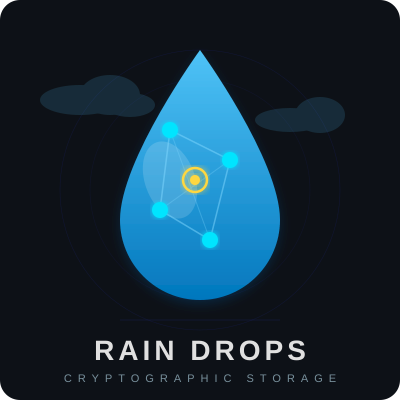

"Una gota de lluvia no contiene información sobre la tormenta."
Rain Drops es un modelo de almacenamiento distribuido basado en criptografía de umbral (Shamir's Secret Sharing). Los datos se fragmentan en micro-unidades criptográficas llamadas gotas (drops) que individualmente no tienen significado. Los datos originales solo pueden reconstruirse cuando un número suficiente de gotas convergen bajo condiciones verificadas.
Con menos de K gotas, el secreto está oculto information-theoretically. Ni computadoras cuánticas pueden romperlo.
Los datos se dividen en N gotas. Cualquier K gotas reconstruyen; K-1 no revelan nada. Resiliente a fallos de nodos.
Cada gota tiene un TTL. Las gotas expiradas se eliminan automáticamente.
Imágenes ARM64 y AMD64. Despliegue en Raspberry Pi, servidores x86 o cloud.
raindrops-core — Librería criptográfica (SSS, AES-GCM, HMAC, RainMap)raindrops-storage — Nodo de almacenamiento Spring Boot con replicaciónraindrops-witness — Nodo testigo para verificación seguraRainClient SDK — Cliente Java de alto nivelgit clone https://github.com/erac73/raindrops-fase1.git
cd raindrops-fase1
mvn -f raindrops-fase1/raindrops/pom.xml install
docker compose -f docker-compose.yml up -d --build